M-Estimators for Robust Linear Modeling#
[1]:
%matplotlib inline
[2]:
import matplotlib.pyplot as plt
import numpy as np
import statsmodels.api as sm
from scipy import stats
from statsmodels.compat import lmap
An M-estimator minimizes the function
where \(\rho\) is a symmetric function of the residuals
The effect of \(\rho\) is to reduce the influence of outliers
\(s\) is an estimate of scale.
The robust estimates \(\hat{\beta}\) are computed by the iteratively re-weighted least squares algorithm
We have several choices available for the weighting functions to be used
[3]:
norms = sm.robust.norms
[4]:
def plot_weights(support, weights_func, xlabels, xticks):
fig = plt.figure(figsize=(12, 8))
ax = fig.add_subplot(111)
ax.plot(support, weights_func(support))
ax.set_xticks(xticks)
ax.set_xticklabels(xlabels, fontsize=16)
ax.set_ylim(-0.1, 1.1)
return ax
Andrew’s Wave#
[5]:
help(norms.AndrewWave.weights)
Help on function weights in module statsmodels.robust.norms:
weights(self, z)
Andrew's wave weighting function for the IRLS algorithm
The psi function scaled by z
Parameters
----------
z : array_like
1d array
Returns
-------
weights : ndarray
weights(z) = sin(z/a) / (z/a) for \|z\| <= a*pi
weights(z) = 0 for \|z\| > a*pi
[6]:
a = 1.339
support = np.linspace(-np.pi * a, np.pi * a, 100)
andrew = norms.AndrewWave(a=a)
plot_weights(
support, andrew.weights, [r"$-\pi*a$", "0", r"$\pi*a$"], [-np.pi * a, 0, np.pi * a]
)
[6]:
<Axes: >
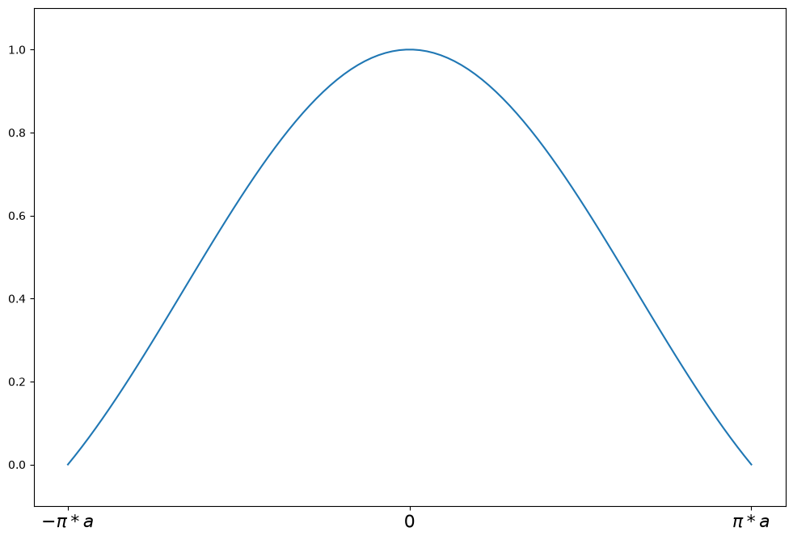
Hampel’s 17A#
[7]:
help(norms.Hampel.weights)
Help on function weights in module statsmodels.robust.norms:
weights(self, z)
Hampel weighting function for the IRLS algorithm.
The psi function scaled by z.
.. math::
w(z) = \begin{cases}
1 & \text{for } |z| \le a \\
a/|z| & \text{for } a < |z| \le b \\
\frac{a(c - |z|)}{|z|(c - b)} & \text{for } b < |z| \le c \\
0 & \text{for } |z| > c
\end{cases}
Parameters
----------
z : array_like
1d array
Returns
-------
weights : ndarray
The value of the weighting function.
[8]:
c = 8
support = np.linspace(-3 * c, 3 * c, 1000)
hampel = norms.Hampel(a=2.0, b=4.0, c=c)
plot_weights(support, hampel.weights, ["3*c", "0", "3*c"], [-3 * c, 0, 3 * c])
[8]:
<Axes: >
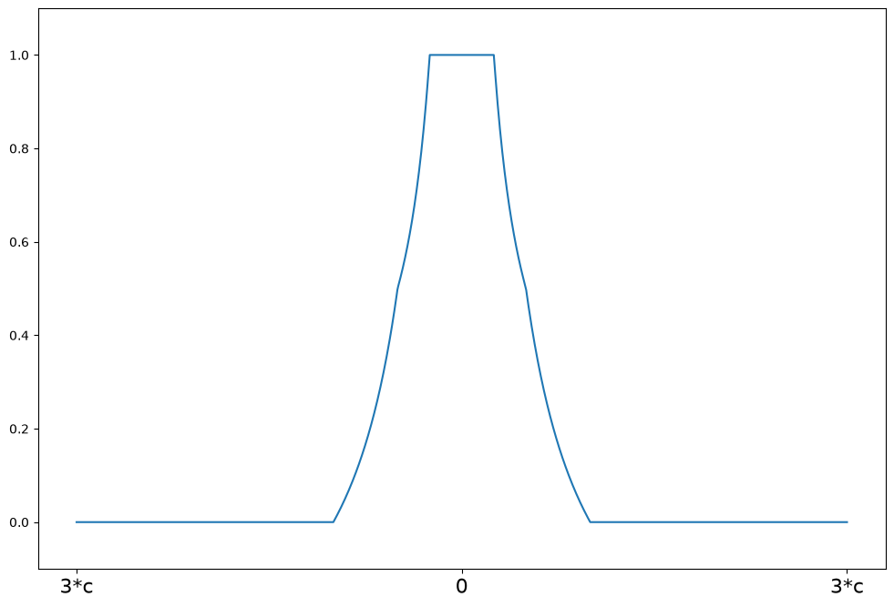
Huber’s t#
[9]:
help(norms.HuberT.weights)
Help on function weights in module statsmodels.robust.norms:
weights(self, z)
Huber's t weighting function for the IRLS algorithm.
The psi function scaled by z.
.. math::
w(z) = \begin{cases}
1 & \text{for } |z| \le t \\
t/|z| & \text{for } |z| > t
\end{cases}
Parameters
----------
z : array_like
1d array
Returns
-------
weights : ndarray
The value of the weighting function.
[10]:
t = 1.345
support = np.linspace(-3 * t, 3 * t, 1000)
huber = norms.HuberT(t=t)
plot_weights(support, huber.weights, ["-3*t", "0", "3*t"], [-3 * t, 0, 3 * t])
[10]:
<Axes: >
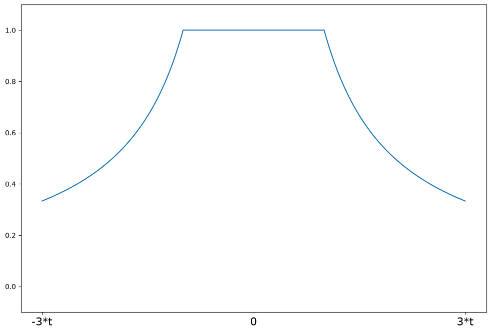
Least Squares#
[11]:
help(norms.LeastSquares.weights)
Help on function weights in module statsmodels.robust.norms:
weights(self, z)
The least squares estimator weighting function for the IRLS algorithm.
The psi function scaled by the input z
Parameters
----------
z : array_like
1d array
Returns
-------
weights : ndarray
weights(z) = np.ones(z.shape)
[12]:
support = np.linspace(-3, 3, 1000)
lst_sq = norms.LeastSquares()
plot_weights(support, lst_sq.weights, ["-3", "0", "3"], [-3, 0, 3])
[12]:
<Axes: >
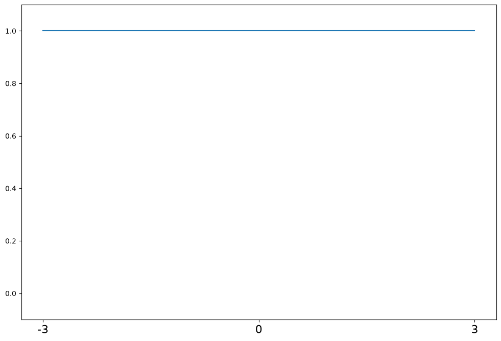
Ramsay’s Ea#
[13]:
help(norms.RamsayE.weights)
Help on function weights in module statsmodels.robust.norms:
weights(self, z)
Ramsay's Ea weighting function for the IRLS algorithm
The psi function scaled by z
Parameters
----------
z : array_like
1d array
Returns
-------
weights : ndarray
weights(z) = exp(-a*\|z\|)
[14]:
a = 0.3
support = np.linspace(-3 * a, 3 * a, 1000)
ramsay = norms.RamsayE(a=a)
plot_weights(support, ramsay.weights, ["-3*a", "0", "3*a"], [-3 * a, 0, 3 * a])
[14]:
<Axes: >
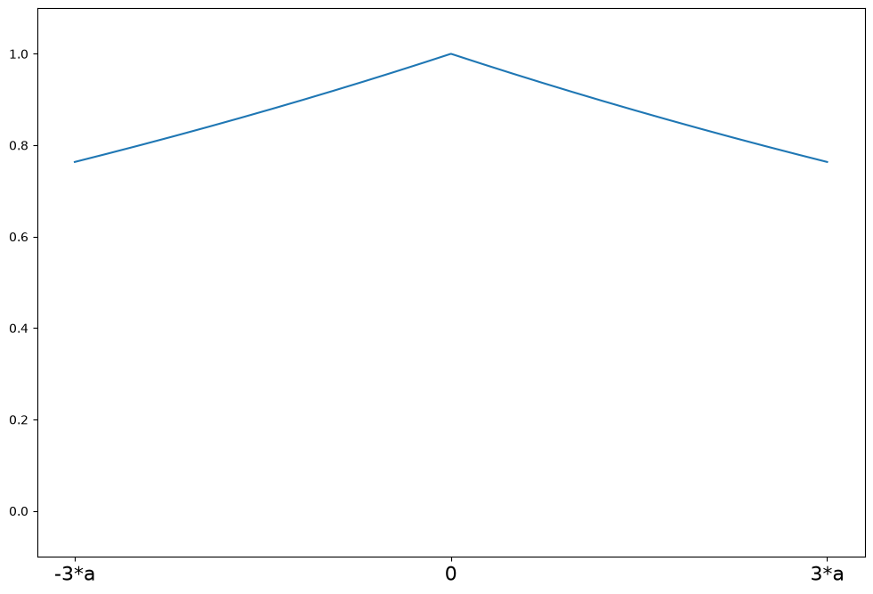
Trimmed Mean#
[15]:
help(norms.TrimmedMean.weights)
Help on function weights in module statsmodels.robust.norms:
weights(self, z)
Least trimmed mean weighting function for the IRLS algorithm
The psi function scaled by z
Parameters
----------
z : array_like
1d array
Returns
-------
weights : ndarray
weights(z) = 1 for \|z\| <= c
weights(z) = 0 for \|z\| > c
[16]:
c = 2
support = np.linspace(-3 * c, 3 * c, 1000)
trimmed = norms.TrimmedMean(c=c)
plot_weights(support, trimmed.weights, ["-3*c", "0", "3*c"], [-3 * c, 0, 3 * c])
[16]:
<Axes: >
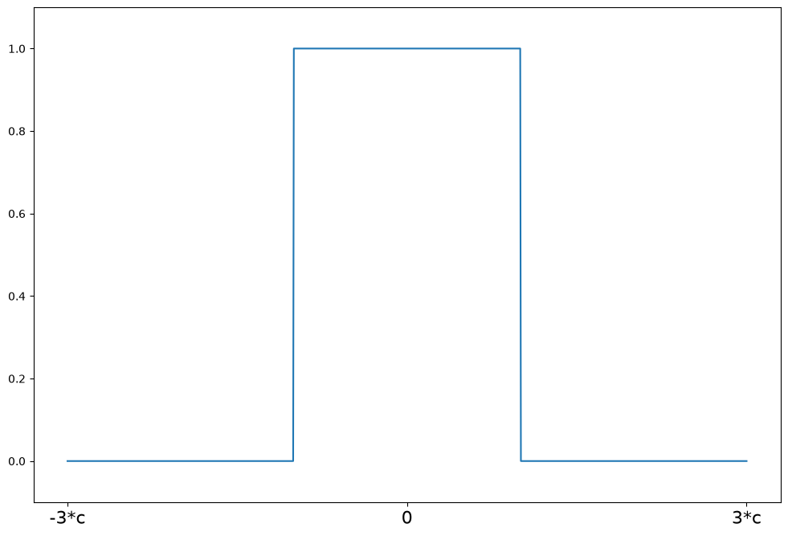
Tukey’s Biweight#
[17]:
help(norms.TukeyBiweight.weights)
Help on function weights in module statsmodels.robust.norms:
weights(self, z)
Tukey's biweight weighting function for the IRLS algorithm
The psi function scaled by z
Parameters
----------
z : array_like
1d array
Returns
-------
weights : ndarray
psi(z) = (1 - (z/c)**2)**2 for \|z\| <= R
psi(z) = 0 for \|z\| > R
[18]:
c = 4.685
support = np.linspace(-3 * c, 3 * c, 1000)
tukey = norms.TukeyBiweight(c=c)
plot_weights(support, tukey.weights, ["-3*c", "0", "3*c"], [-3 * c, 0, 3 * c])
[18]:
<Axes: >
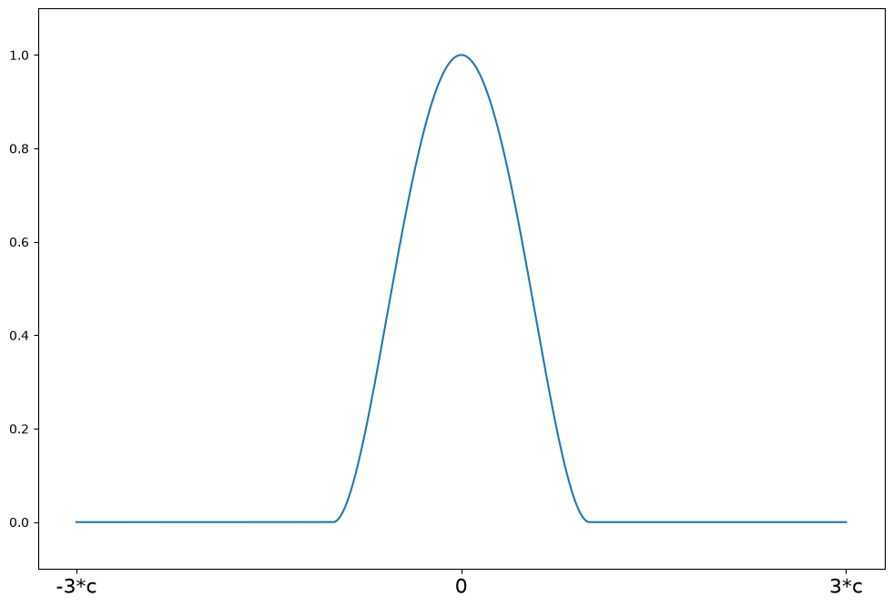
Scale Estimators#
Robust estimates of the location
[19]:
x = np.array([1, 2, 3, 4, 500])
The mean is not a robust estimator of location
[20]:
x.mean()
[20]:
np.float64(102.0)
The median, on the other hand, is a robust estimator with a breakdown point of 50%
[21]:
np.median(x)
[21]:
np.float64(3.0)
Analogously for the scale
The standard deviation is not robust
[22]:
x.std()
[22]:
np.float64(199.00251254695254)
Median Absolute Deviation
Standardized Median Absolute Deviation is a consistent estimator for \(\hat{\sigma}\)
where \(K\) depends on the distribution. For the normal distribution for example,
[23]:
stats.norm.ppf(0.75)
[23]:
np.float64(0.6744897501960817)
[24]:
print(x)
[ 1 2 3 4 500]
[25]:
sm.robust.scale.mad(x)
[25]:
np.float64(1.482602218505602)
[26]:
np.array([1, 2, 3, 4, 5.0]).std()
[26]:
np.float64(1.4142135623730951)
Another robust estimator of scale is the Interquartile Range (IQR)
where \(\hat{X}_{p}\) is the sample p-th quantile and \(K\) depends on the distribution.
The standardized IQR, given by \(K \cdot \text{IQR}\) for
is a consistent estimator of the standard deviation for normal data.
[27]:
sm.robust.scale.iqr(x)
[27]:
array(1.48260222)
The IQR is less robust than the MAD in the sense that it has a lower breakdown point: it can withstand 25% outlying observations before being completely ruined, whereas the MAD can withstand 50% outlying observations. However, the IQR is better suited for asymmetric distributions.
Yet another robust estimator of scale is the \(Q_n\) estimator, introduced in Rousseeuw & Croux (1993), ‘Alternatives to the Median Absolute Deviation’. Then \(Q_n\) estimator is given by
where \(h\approx (1/4){{n}\choose{2}}\) and \(K\) is a given constant. In words, the \(Q_n\) estimator is the normalized \(h\)-th order statistic of the absolute differences of the data. The normalizing constant \(K\) is usually chosen as 2.219144, to make the estimator consistent for the standard deviation in the case of normal data. The \(Q_n\) estimator has a 50% breakdown point and a 82% asymptotic efficiency at the normal distribution, much higher than the 37% efficiency of the MAD.
[28]:
sm.robust.scale.qn_scale(x)
[28]:
2.219144465985076
The default for Robust Linear Models is MAD
another popular choice is Huber’s proposal 2
[29]:
np.random.seed(12345)
fat_tails = stats.t(6).rvs(40)
[30]:
kde = sm.nonparametric.KDEUnivariate(fat_tails)
kde.fit()
fig = plt.figure(figsize=(12, 8))
ax = fig.add_subplot(111)
ax.plot(kde.support, kde.density)
[30]:
[<matplotlib.lines.Line2D at 0x7f6653375fd0>]
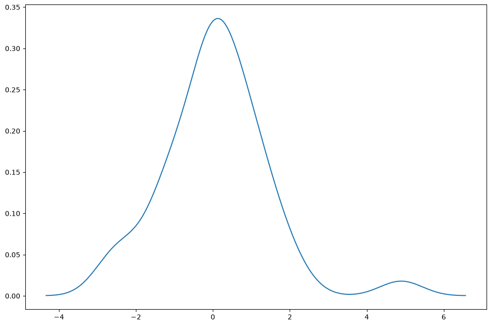
[31]:
print(fat_tails.mean(), fat_tails.std())
0.0688231044810875 1.3471633229698652
[32]:
print(stats.norm.fit(fat_tails))
(np.float64(0.0688231044810875), np.float64(1.3471633229698652))
[33]:
print(stats.t.fit(fat_tails, f0=6))
(6, np.float64(0.03900835312789366), np.float64(1.0563837144431252))
[34]:
huber = sm.robust.scale.Huber()
loc, scale = huber(fat_tails)
print(loc, scale)
0.040489843838476335 1.155713998907144
[35]:
sm.robust.mad(fat_tails)
[35]:
np.float64(1.115335001165415)
[36]:
sm.robust.mad(fat_tails, c=stats.t(6).ppf(0.75))
[36]:
np.float64(1.048391656592289)
[37]:
sm.robust.scale.mad(fat_tails)
[37]:
np.float64(1.115335001165415)
Duncan’s Occupational Prestige data - M-estimation for outliers#
[38]:
from statsmodels.formula.api import ols, rlm
from statsmodels.graphics.api import abline_plot
[39]:
prestige = sm.datasets.get_rdataset("Duncan", "carData", cache=True).data
[40]:
print(prestige.head(10))
type income education prestige
rownames
accountant prof 62 86 82
pilot prof 72 76 83
architect prof 75 92 90
author prof 55 90 76
chemist prof 64 86 90
minister prof 21 84 87
professor prof 64 93 93
dentist prof 80 100 90
reporter wc 67 87 52
engineer prof 72 86 88
[41]:
fig = plt.figure(figsize=(12, 12))
ax1 = fig.add_subplot(211, xlabel="Income", ylabel="Prestige")
ax1.scatter(prestige.income, prestige.prestige)
xy_outlier = prestige.loc["minister", ["income", "prestige"]]
ax1.annotate("Minister", xy_outlier, xy_outlier + 1, fontsize=16)
ax2 = fig.add_subplot(212, xlabel="Education", ylabel="Prestige")
ax2.scatter(prestige.education, prestige.prestige)
[41]:
<matplotlib.collections.PathCollection at 0x7f665342b9d0>
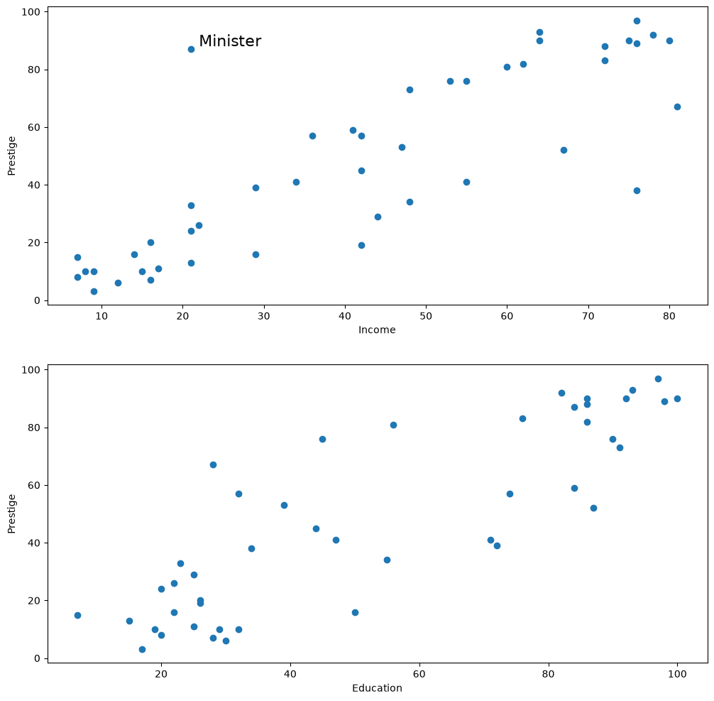
[42]:
ols_model = ols("prestige ~ income + education", prestige).fit()
print(ols_model.summary())
OLS Regression Results
==============================================================================
Dep. Variable: prestige R-squared: 0.828
Model: OLS Adj. R-squared: 0.820
Method: Least Squares F-statistic: 101.2
Date: Sat, 27 Jun 2026 Prob (F-statistic): 8.65e-17
Time: 20:37:06 Log-Likelihood: -178.98
No. Observations: 45 AIC: 364.0
Df Residuals: 42 BIC: 369.4
Df Model: 2
Covariance Type: nonrobust
==============================================================================
coef std err t P>|t| [0.025 0.975]
------------------------------------------------------------------------------
Intercept -6.0647 4.272 -1.420 0.163 -14.686 2.556
income 0.5987 0.120 5.003 0.000 0.357 0.840
education 0.5458 0.098 5.555 0.000 0.348 0.744
==============================================================================
Omnibus: 1.279 Durbin-Watson: 1.458
Prob(Omnibus): 0.528 Jarque-Bera (JB): 0.520
Skew: 0.155 Prob(JB): 0.771
Kurtosis: 3.426 Cond. No. 163.
==============================================================================
Notes:
[1] Standard Errors assume that the covariance matrix of the errors is correctly specified.
[43]:
infl = ols_model.get_influence()
student = infl.summary_frame()["student_resid"]
print(student)
rownames
accountant 0.303900
pilot 0.340920
architect 0.072256
author 0.000711
chemist 0.826578
minister 3.134519
professor 0.768277
dentist -0.498082
reporter -2.397022
engineer 0.306225
undertaker -0.187339
lawyer -0.303082
physician 0.355687
welfare.worker -0.411406
teacher 0.050510
conductor -1.704032
contractor 2.043805
factory.owner 1.602429
store.manager 0.142425
banker 0.508388
bookkeeper -0.902388
mail.carrier -1.433249
insurance.agent -1.930919
store.clerk -1.760491
carpenter 1.068858
electrician 0.731949
RR.engineer 0.808922
machinist 1.887047
auto.repairman 0.522735
plumber -0.377954
gas.stn.attendant -0.666596
coal.miner 1.018527
streetcar.motorman -1.104485
taxi.driver 0.023322
truck.driver -0.129227
machine.operator 0.499922
barber 0.173805
bartender -0.902422
shoe.shiner -0.429357
cook 0.127207
soda.clerk -0.883095
watchman -0.513502
janitor -0.079890
policeman 0.078847
waiter -0.475972
Name: student_resid, dtype: float64
[44]:
print(student.loc[np.abs(student) > 2])
rownames
minister 3.134519
reporter -2.397022
contractor 2.043805
Name: student_resid, dtype: float64
[45]:
print(infl.summary_frame().loc["minister"])
dfb_Intercept 0.144937
dfb_income -1.220939
dfb_education 1.263019
cooks_d 0.566380
standard_resid 2.849416
hat_diag 0.173058
dffits_internal 1.303510
student_resid 3.134519
dffits 1.433935
Name: minister, dtype: float64
[46]:
sidak = ols_model.outlier_test("sidak")
sidak.sort_values("unadj_p", inplace=True)
print(sidak)
student_resid unadj_p sidak(p)
minister 3.134519 0.003177 0.133421
reporter -2.397022 0.021170 0.618213
contractor 2.043805 0.047433 0.887721
insurance.agent -1.930919 0.060428 0.939485
machinist 1.887047 0.066248 0.954247
store.clerk -1.760491 0.085783 0.982331
conductor -1.704032 0.095944 0.989315
factory.owner 1.602429 0.116738 0.996250
mail.carrier -1.433249 0.159369 0.999595
streetcar.motorman -1.104485 0.275823 1.000000
carpenter 1.068858 0.291386 1.000000
coal.miner 1.018527 0.314400 1.000000
bartender -0.902422 0.372104 1.000000
bookkeeper -0.902388 0.372122 1.000000
soda.clerk -0.883095 0.382334 1.000000
chemist 0.826578 0.413261 1.000000
RR.engineer 0.808922 0.423229 1.000000
professor 0.768277 0.446725 1.000000
electrician 0.731949 0.468363 1.000000
gas.stn.attendant -0.666596 0.508764 1.000000
auto.repairman 0.522735 0.603972 1.000000
watchman -0.513502 0.610357 1.000000
banker 0.508388 0.613906 1.000000
machine.operator 0.499922 0.619802 1.000000
dentist -0.498082 0.621088 1.000000
waiter -0.475972 0.636621 1.000000
shoe.shiner -0.429357 0.669912 1.000000
welfare.worker -0.411406 0.682918 1.000000
plumber -0.377954 0.707414 1.000000
physician 0.355687 0.723898 1.000000
pilot 0.340920 0.734905 1.000000
engineer 0.306225 0.760983 1.000000
accountant 0.303900 0.762741 1.000000
lawyer -0.303082 0.763360 1.000000
undertaker -0.187339 0.852319 1.000000
barber 0.173805 0.862874 1.000000
store.manager 0.142425 0.887442 1.000000
truck.driver -0.129227 0.897810 1.000000
cook 0.127207 0.899399 1.000000
janitor -0.079890 0.936713 1.000000
policeman 0.078847 0.937538 1.000000
architect 0.072256 0.942750 1.000000
teacher 0.050510 0.959961 1.000000
taxi.driver 0.023322 0.981507 1.000000
author 0.000711 0.999436 1.000000
[47]:
fdr = ols_model.outlier_test("fdr_bh")
fdr.sort_values("unadj_p", inplace=True)
print(fdr)
student_resid unadj_p fdr_bh(p)
minister 3.134519 0.003177 0.142974
reporter -2.397022 0.021170 0.476332
contractor 2.043805 0.047433 0.596233
insurance.agent -1.930919 0.060428 0.596233
machinist 1.887047 0.066248 0.596233
store.clerk -1.760491 0.085783 0.616782
conductor -1.704032 0.095944 0.616782
factory.owner 1.602429 0.116738 0.656653
mail.carrier -1.433249 0.159369 0.796844
streetcar.motorman -1.104485 0.275823 0.999436
carpenter 1.068858 0.291386 0.999436
coal.miner 1.018527 0.314400 0.999436
bartender -0.902422 0.372104 0.999436
bookkeeper -0.902388 0.372122 0.999436
soda.clerk -0.883095 0.382334 0.999436
chemist 0.826578 0.413261 0.999436
RR.engineer 0.808922 0.423229 0.999436
professor 0.768277 0.446725 0.999436
electrician 0.731949 0.468363 0.999436
gas.stn.attendant -0.666596 0.508764 0.999436
auto.repairman 0.522735 0.603972 0.999436
watchman -0.513502 0.610357 0.999436
banker 0.508388 0.613906 0.999436
machine.operator 0.499922 0.619802 0.999436
dentist -0.498082 0.621088 0.999436
waiter -0.475972 0.636621 0.999436
shoe.shiner -0.429357 0.669912 0.999436
welfare.worker -0.411406 0.682918 0.999436
plumber -0.377954 0.707414 0.999436
physician 0.355687 0.723898 0.999436
pilot 0.340920 0.734905 0.999436
engineer 0.306225 0.760983 0.999436
accountant 0.303900 0.762741 0.999436
lawyer -0.303082 0.763360 0.999436
undertaker -0.187339 0.852319 0.999436
barber 0.173805 0.862874 0.999436
store.manager 0.142425 0.887442 0.999436
truck.driver -0.129227 0.897810 0.999436
cook 0.127207 0.899399 0.999436
janitor -0.079890 0.936713 0.999436
policeman 0.078847 0.937538 0.999436
architect 0.072256 0.942750 0.999436
teacher 0.050510 0.959961 0.999436
taxi.driver 0.023322 0.981507 0.999436
author 0.000711 0.999436 0.999436
[48]:
rlm_model = rlm("prestige ~ income + education", prestige).fit()
print(rlm_model.summary())
Robust linear Model Regression Results
==============================================================================
Dep. Variable: prestige No. Observations: 45
Model: RLM Df Residuals: 42
Method: IRLS Df Model: 2
Norm: HuberT
Scale Est.: mad
Cov Type: H1
Date: Sat, 27 Jun 2026
Time: 20:37:07
No. Iterations: 18
==============================================================================
coef std err z P>|z| [0.025 0.975]
------------------------------------------------------------------------------
Intercept -7.1107 3.879 -1.833 0.067 -14.713 0.492
income 0.7015 0.109 6.456 0.000 0.489 0.914
education 0.4854 0.089 5.441 0.000 0.311 0.660
==============================================================================
If the model instance has been used for another fit with different fit parameters, then the fit options might not be the correct ones anymore .
[49]:
print(rlm_model.weights)
rownames
accountant 1.000000
pilot 1.000000
architect 1.000000
author 1.000000
chemist 1.000000
minister 0.344596
professor 1.000000
dentist 1.000000
reporter 0.441669
engineer 1.000000
undertaker 1.000000
lawyer 1.000000
physician 1.000000
welfare.worker 1.000000
teacher 1.000000
conductor 0.538445
contractor 0.552262
factory.owner 0.706169
store.manager 1.000000
banker 1.000000
bookkeeper 1.000000
mail.carrier 0.690764
insurance.agent 0.533499
store.clerk 0.618656
carpenter 0.935848
electrician 1.000000
RR.engineer 1.000000
machinist 0.570360
auto.repairman 1.000000
plumber 1.000000
gas.stn.attendant 1.000000
coal.miner 0.963821
streetcar.motorman 0.832870
taxi.driver 1.000000
truck.driver 1.000000
machine.operator 1.000000
barber 1.000000
bartender 1.000000
shoe.shiner 1.000000
cook 1.000000
soda.clerk 1.000000
watchman 1.000000
janitor 1.000000
policeman 1.000000
waiter 1.000000
dtype: float64
Hertzprung Russell data for Star Cluster CYG 0B1 - Leverage Points#
Data is on the luminosity and temperature of 47 stars in the direction of Cygnus.
[50]:
dta = sm.datasets.get_rdataset("starsCYG", "robustbase", cache=True).data
[51]:
from matplotlib.patches import Ellipse
fig = plt.figure(figsize=(12, 8))
ax = fig.add_subplot(
111,
xlabel="log(Temp)",
ylabel="log(Light)",
title="Hertzsprung-Russell Diagram of Star Cluster CYG OB1",
)
ax.scatter(*dta.values.T)
# highlight outliers
e = Ellipse((3.5, 6), 0.2, 1, alpha=0.25, color="r")
ax.add_patch(e)
ax.annotate(
"Red giants",
xy=(3.6, 6),
xytext=(3.8, 6),
arrowprops=dict(facecolor="black", shrink=0.05, width=2),
horizontalalignment="left",
verticalalignment="bottom",
clip_on=True, # clip to the axes bounding box
fontsize=16,
)
# annotate these with their index
for i, row in dta.loc[dta["log.Te"] < 3.8].iterrows():
ax.annotate(i, row, row + 0.01, fontsize=14)
xlim, ylim = ax.get_xlim(), ax.get_ylim()
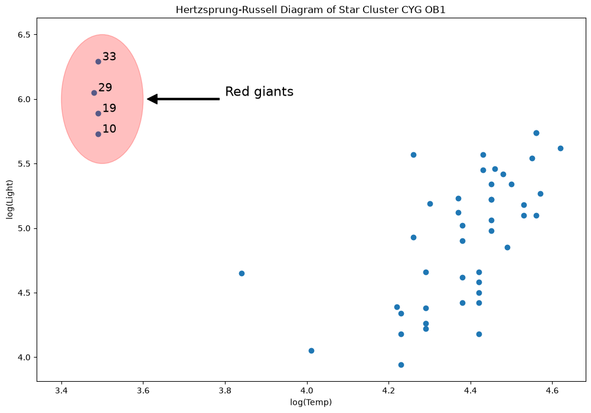
[52]:
from IPython.display import Image
Image(filename="star_diagram.png")
[52]:
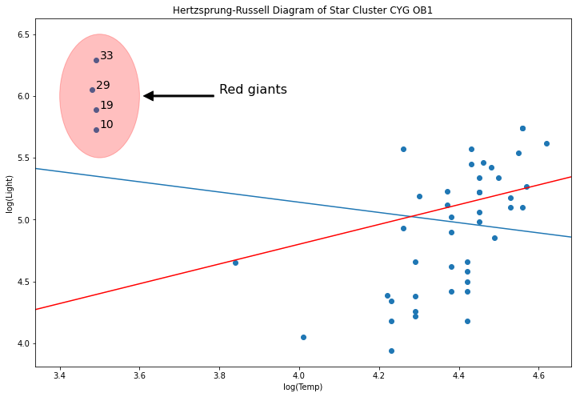
[53]:
y = dta["log.light"]
X = sm.add_constant(dta["log.Te"], prepend=True)
ols_model = sm.OLS(y, X).fit()
abline_plot(model_results=ols_model, ax=ax)
[53]:
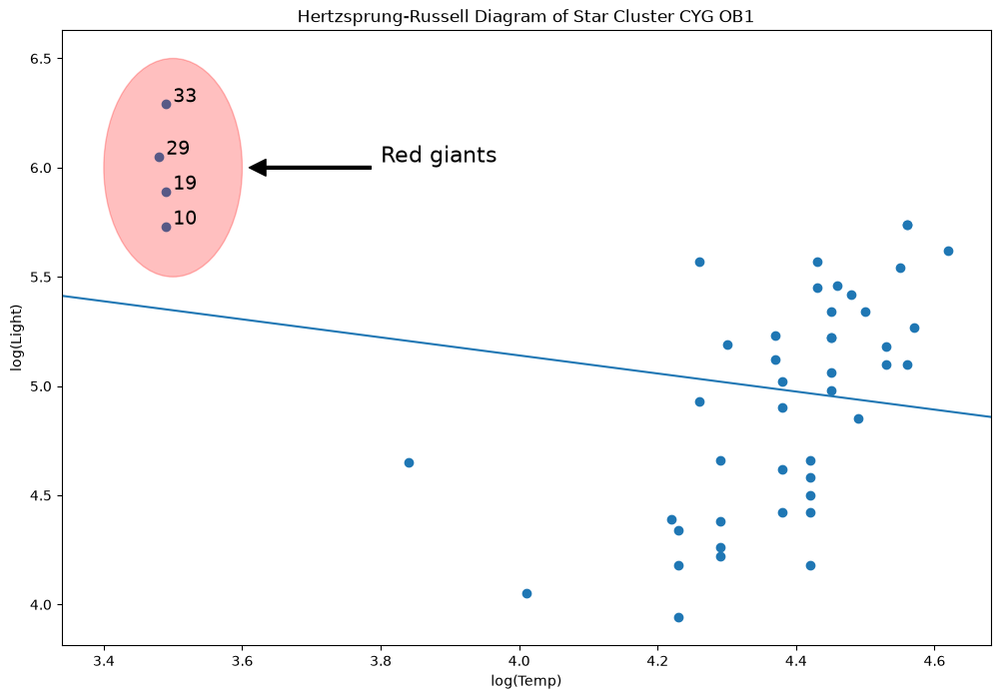
[54]:
rlm_mod = sm.RLM(y, X, sm.robust.norms.TrimmedMean(0.5)).fit()
abline_plot(model_results=rlm_mod, ax=ax, color="red")
[54]:
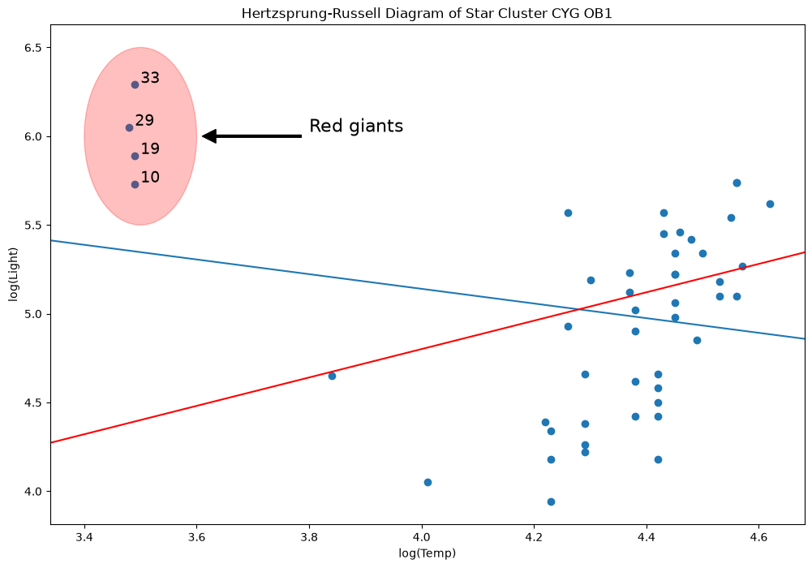
Why? Because M-estimators are not robust to leverage points.
[55]:
infl = ols_model.get_influence()
[56]:
h_bar = 2 * (ols_model.df_model + 1) / ols_model.nobs
hat_diag = infl.summary_frame()["hat_diag"]
hat_diag.loc[hat_diag > h_bar]
[56]:
10 0.194103
19 0.194103
29 0.198344
33 0.194103
Name: hat_diag, dtype: float64
[57]:
sidak2 = ols_model.outlier_test("sidak")
sidak2.sort_values("unadj_p", inplace=True)
print(sidak2)
student_resid unadj_p sidak(p)
16 -2.049393 0.046415 0.892872
13 -2.035329 0.047868 0.900286
33 1.905847 0.063216 0.953543
18 -1.575505 0.122304 0.997826
3 1.522185 0.135118 0.998911
1 1.522185 0.135118 0.998911
21 -1.450418 0.154034 0.999615
17 -1.426675 0.160731 0.999735
29 1.388520 0.171969 0.999859
14 -1.374733 0.176175 0.999889
35 1.346543 0.185023 0.999933
34 -1.272159 0.209999 0.999985
28 -1.186946 0.241618 0.999998
20 -1.150621 0.256103 0.999999
44 1.134779 0.262612 0.999999
39 1.091886 0.280826 1.000000
19 1.064878 0.292740 1.000000
6 -1.026873 0.310093 1.000000
30 -1.009096 0.318446 1.000000
22 -0.979768 0.332557 1.000000
8 0.961218 0.341695 1.000000
5 0.913802 0.365801 1.000000
11 0.871997 0.387943 1.000000
12 0.856685 0.396261 1.000000
46 -0.833923 0.408829 1.000000
10 0.743920 0.460879 1.000000
42 0.727179 0.470968 1.000000
15 -0.689258 0.494280 1.000000
43 0.688272 0.494895 1.000000
7 0.655712 0.515424 1.000000
40 -0.646396 0.521381 1.000000
26 -0.640978 0.524862 1.000000
25 -0.545561 0.588123 1.000000
37 0.472819 0.638680 1.000000
32 0.472819 0.638680 1.000000
38 0.462187 0.646225 1.000000
0 0.430686 0.668799 1.000000
31 0.341726 0.734184 1.000000
36 0.318911 0.751303 1.000000
4 0.307890 0.759619 1.000000
9 0.235114 0.815211 1.000000
41 0.187732 0.851950 1.000000
2 -0.182093 0.856346 1.000000
23 -0.156014 0.876736 1.000000
27 -0.147406 0.883485 1.000000
24 0.065195 0.948314 1.000000
45 0.045675 0.963776 1.000000
[58]:
fdr2 = ols_model.outlier_test("fdr_bh")
fdr2.sort_values("unadj_p", inplace=True)
print(fdr2)
student_resid unadj_p fdr_bh(p)
16 -2.049393 0.046415 0.764747
13 -2.035329 0.047868 0.764747
33 1.905847 0.063216 0.764747
18 -1.575505 0.122304 0.764747
3 1.522185 0.135118 0.764747
1 1.522185 0.135118 0.764747
21 -1.450418 0.154034 0.764747
17 -1.426675 0.160731 0.764747
29 1.388520 0.171969 0.764747
14 -1.374733 0.176175 0.764747
35 1.346543 0.185023 0.764747
34 -1.272159 0.209999 0.764747
28 -1.186946 0.241618 0.764747
20 -1.150621 0.256103 0.764747
44 1.134779 0.262612 0.764747
39 1.091886 0.280826 0.764747
19 1.064878 0.292740 0.764747
6 -1.026873 0.310093 0.764747
30 -1.009096 0.318446 0.764747
22 -0.979768 0.332557 0.764747
8 0.961218 0.341695 0.764747
5 0.913802 0.365801 0.768599
11 0.871997 0.387943 0.768599
12 0.856685 0.396261 0.768599
46 -0.833923 0.408829 0.768599
10 0.743920 0.460879 0.770890
42 0.727179 0.470968 0.770890
15 -0.689258 0.494280 0.770890
43 0.688272 0.494895 0.770890
7 0.655712 0.515424 0.770890
40 -0.646396 0.521381 0.770890
26 -0.640978 0.524862 0.770890
25 -0.545561 0.588123 0.837630
37 0.472819 0.638680 0.843682
32 0.472819 0.638680 0.843682
38 0.462187 0.646225 0.843682
0 0.430686 0.668799 0.849556
31 0.341726 0.734184 0.892552
36 0.318911 0.751303 0.892552
4 0.307890 0.759619 0.892552
9 0.235114 0.815211 0.922751
41 0.187732 0.851950 0.922751
2 -0.182093 0.856346 0.922751
23 -0.156014 0.876736 0.922751
27 -0.147406 0.883485 0.922751
24 0.065195 0.948314 0.963776
45 0.045675 0.963776 0.963776
Let’s delete that line
[59]:
l = ax.lines[-1]
l.remove()
del l
[60]:
weights = np.ones(len(X))
weights[X[X["log.Te"] < 3.8].index.values - 1] = 0
wls_model = sm.WLS(y, X, weights=weights).fit()
abline_plot(model_results=wls_model, ax=ax, color="green")
[60]:
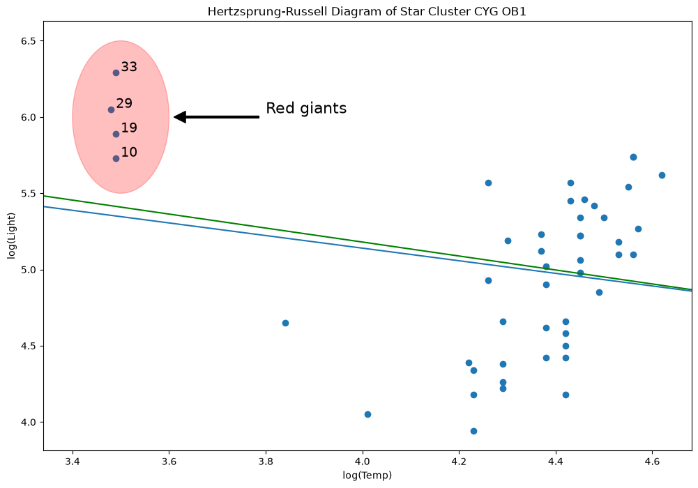
MM estimators are good for this type of problem, unfortunately, we do not yet have these yet.
It’s being worked on, but it gives a good excuse to look at the R cell magics in the notebook.
[61]:
yy = y.values[:, None]
xx = X["log.Te"].values[:, None]
Note: The R code and the results in this notebook has been converted to markdown so that R is not required to build the documents. The R results in the notebook were computed using R 3.5.1 and robustbase 0.93.
%load_ext rpy2.ipython
%R library(robustbase)
%Rpush yy xx
%R mod <- lmrob(yy ~ xx);
%R params <- mod$coefficients;
%Rpull params
%R print(mod)
Call:
lmrob(formula = yy ~ xx)
\--> method = "MM"
Coefficients:
(Intercept) xx
-4.969 2.253
[62]:
params = [-4.969387980288108, 2.2531613477892365] # Computed using R
print(params[0], params[1])
-4.969387980288108 2.2531613477892365
[63]:
abline_plot(intercept=params[0], slope=params[1], ax=ax, color="red")
[63]:
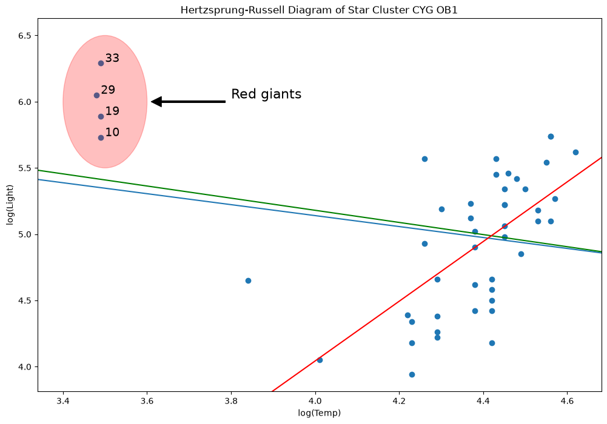
Exercise: Breakdown points of M-estimator#
[64]:
np.random.seed(12345)
nobs = 200
beta_true = np.array([3, 1, 2.5, 3, -4])
X = np.random.uniform(-20, 20, size=(nobs, len(beta_true) - 1))
# stack a constant in front
X = sm.add_constant(X, prepend=True) # np.c_[np.ones(nobs), X]
mc_iter = 500
contaminate = 0.25 # percentage of response variables to contaminate
[65]:
all_betas = []
for i in range(mc_iter):
y = np.dot(X, beta_true) + np.random.normal(size=200)
random_idx = np.random.randint(0, nobs, size=int(contaminate * nobs))
y[random_idx] = np.random.uniform(-750, 750)
beta_hat = sm.RLM(y, X).fit().params
all_betas.append(beta_hat)
[66]:
all_betas = np.asarray(all_betas)
se_loss = lambda x: np.linalg.norm(x, ord=2) ** 2
se_beta = lmap(se_loss, all_betas - beta_true)
Squared error loss#
[67]:
np.array(se_beta).mean()
[67]:
np.float64(0.44502948730683384)
[68]:
all_betas.mean(0)
[68]:
array([ 2.99711706, 0.99898147, 2.49909344, 2.99712918, -3.99626521])
[69]:
beta_true
[69]:
array([ 3. , 1. , 2.5, 3. , -4. ])
[70]:
se_loss(all_betas.mean(0) - beta_true)
[70]:
np.float64(3.236091328690045e-05)